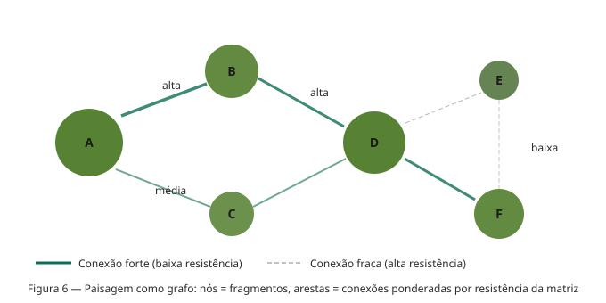
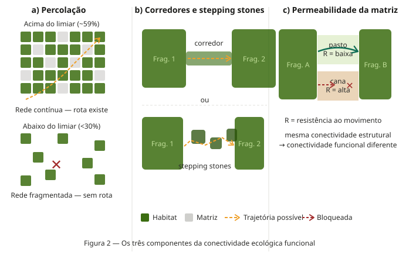
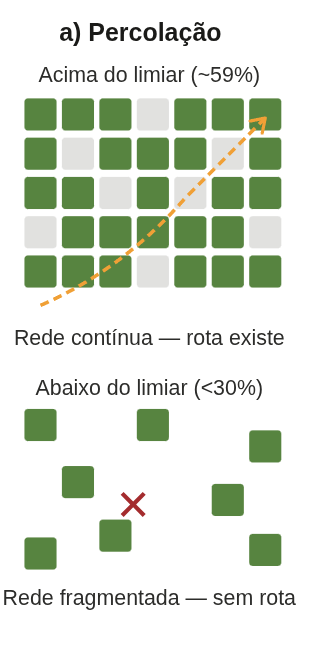
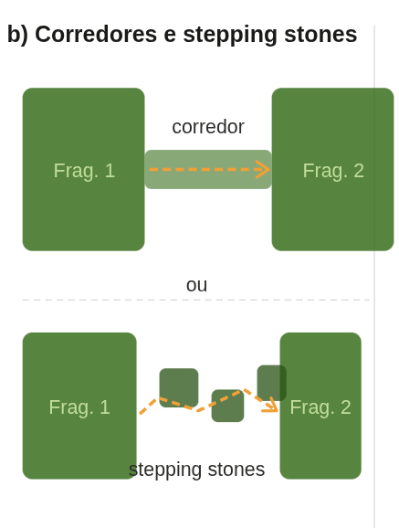
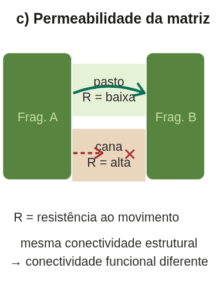
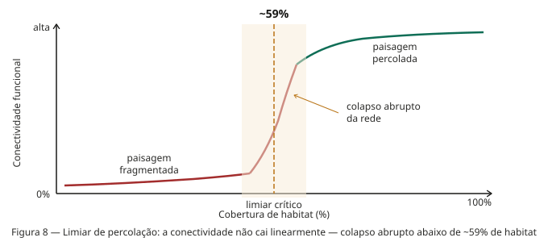
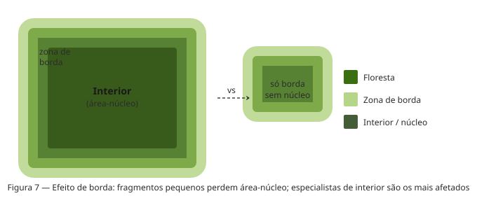
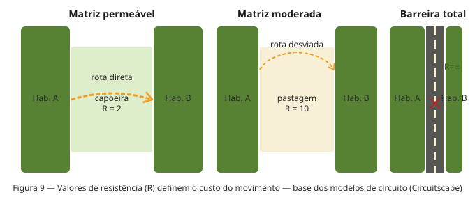
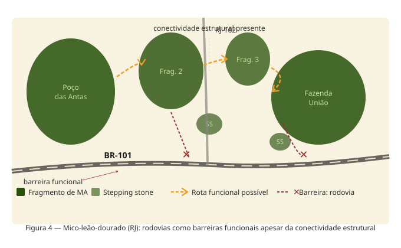

Conectividade Ecológica vs. Conectividade Física
Semana 6 — Ecologia de Paisagens BO-304
O problema central
- A mesma estrutura física pode ser:
- Uma passagem funcional para uns
- Uma barreira intransponível para outros
- A resposta depende sempre da espécie

O que é conectividade física?
- Grau em que elementos da paisagem estão fisicamente contíguos ou próximos
- Mensurável
- Compartilham borda comum (adjacência direta)
- Estão dentro de um limiar de distância

Métricas de conectividade física
Limitação fundamental:
- Estas métricas são espécie-cegas
- Não informam se um corredor é usado pela fauna
- Necessário complementar com dados biológicos

O que é conectividade ecológica?
- Grau em que a paisagem facilita ou impede o movimento de organismo
- A mesma paisagem pode ser:
- Altamente conectada para espécies generalistas
- Completamente isolante para especialistas

Os três componentes da conectividade funcional
1. Percolação do habitat
- Existência de redes contínuas percorríveis
- Limiar crítico: ~59% de cobertura de habitat
- Abaixo do limiar: colapso abrupto da rede

2. Corredores e stepping stones
- Corredores: estruturas lineares que ligam fragmentos
- Stepping stones: manchas pequenas como pontos de parada

3. Permeabilidade da matriz
- Diferentes usos do solo oferecem diferentes resistências
- Matriz de pasto ≠ matriz de cana ≠ rodovia
- Pode ser mais determinante que a presença de corredores

A existência de limiares
- Deriva da quantidade de hábitat
- Abaixo deste certo valor há colapso abrupto
- A relação não é linear
- Pequenas perdas adicionais podem romper redes inteiras

Conectividade é espécie-específica
Anfíbio terrestre: estrada de terra = barreira
Garça: mesma estrada = invisível
Sagui (generalista): faixa de 30 m de mata ciliar
Gavião-real (especialista): gargalo intransponível
Não existe conectividade “da paisagem” em abstrato

Permeabilidade da matriz
- Cada tipo de uso do solo tem um valor de resistência (R)
- Baixa resistência → organismos cruzam com facilidade e baixa mortalidade
- Alta resistência → poucos indivíduos cruzam; desvios longos necessários
Exemplos de resistência relativa (mamíferos médio porte)
| Tipo de matriz | R aproximado |
|---|---|
| Capoeira/mata secundária | 1–3 |
| Pasto baixo | 5–10 |
| Agricultura extensiva | 20–50 |
| Rodovia movimentada | 500–∞ |
Resistância da matriz

Os quatro cenários possíveis

Caatinga: corredor físico, barreira ecológica
- Paisagens com fragmentos ligados por mata ciliar de 30–50 m
- Estruturalmente: conectividade física presente (borda compartilhada) Lição: Medir só a estrutura leva a diagnósticos enganosos
Caso 2 — Mico-leão-dourado e a BR-101


Ferramentas para medir conectividade funcional
Modelos de resistência e custo:
- Telemetria (GPS/VHF)
- Genética de paisagem
- Câmeras-trap
- Marcação e recaptura
Síntese: o que a análise de conectividade requer
- Para quem? — definir espécie ou processo-alvo antes de qualquer métrica
- Em que escala? — calibrar extensão e grão para a biologia da espécie
- Qual a resistência da matriz? — não tratar a matriz como espaço vazio
- O corredor é usado? — validar com dados biológicos independentes
Finalmentes
→ Conectividade física pertence ao mapa — mensurável sem dados biológicos
→ Conectividade funcional pertence à espécie — emerge da interação organismo ↔︎ paisagem
→ A mesma paisagem pode ser conectada para uns e isolante para outros
→ A matriz importa: resistência diferencial define quem passa e quem não passa
→ Toda análise deve começar com a pergunta: para qual espécie ou processo?